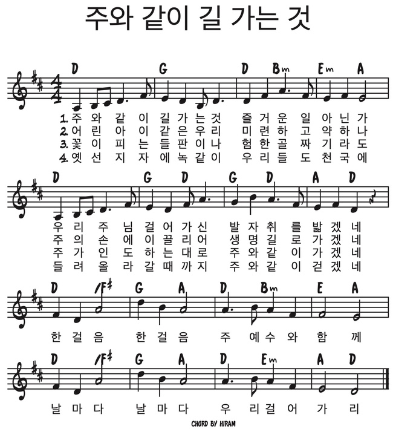

그리고
2026년 10월 25일 주일설교 "그리고"(창세기 5장 1~32절)과 같은 메시지를, 또 다른 이야기로 함께 나누는 가정예배입니다.
시편 23:1-6 · 어두운 골짜기에서도 함께 걸으시는 목자
1. 묵상기도
다같이잠시 눈을 감고 마음을 가다듬습니다. 이번 한 주 동안 하나님께서 우리 가족과 함께 걸어 주신 순간들을 하나씩 떠올리며 나아갑니다.
2. 신앙고백
다같이나는 전능하신 아버지 하나님, 천지의 창조주를 믿습니다. 나는 그의 유일하신 아들, 우리 주 예수 그리스도를 믿습니다. 그는 성령으로 잉태되어 동정녀 마리아에게서 나시고, 본디오 빌라도에게 고난을 받아 십자가에 못 박혀 죽으시고, 장사된 지 사흘 만에 죽은 자 가운데서 다시 살아나셨으며, 하늘에 오르시어 전능하신 아버지 하나님 우편에 앉아 계시다가, 거기로부터 살아 있는 자와 죽은 자를 심판하러 오십니다. 나는 성령을 믿으며, 거룩한 공교회와 성도의 교제와 죄를 용서받는 것과 몸의 부활과 영생을 믿습니다. 아멘.
2004년 한국기독교교회협의회·한국기독교총연합회·대한성서공회 공동 새번역
3. 찬송
다같이주와 같이 길 가는 것

4. 대표기도
담당자미리 정한 가족이 아래 기도문을 그대로 읽거나, 참고하여 자신의 말로 기도합니다.
사랑하는 하나님 아버지, 온 가족이 함께 모여 예배드릴 수 있어서 감사합니다. 우리는 무섭고 슬픈 일을 만나면 혼자라고 느낄 때가 많습니다. 하지만 하나님은 우리의 목자가 되셔서 어두운 골짜기에서도 우리와 함께 걸어 주십니다. 우리를 위해 목숨을 버리신 예수님이 지금도 우리 손을 붙잡고 계심을 감사합니다. 오늘 말씀을 들으며 우리 가족이 그 손을 꼭 붙잡게 해 주세요. 예수님 이름으로 기도합니다. 아멘.
5. 성경봉독
다같이시편 23:1-6 (개역개정)
1여호와는 나의 목자시니 내게 부족함이 없으리로다
2그가 나를 푸른 풀밭에 누이시며 쉴 만한 물 가로 인도하시는도다
3내 영혼을 소생시키시고 자기 이름을 위하여 의의 길로 인도하시는도다
4내가 사망의 음침한 골짜기로 다닐지라도 해를 두려워하지 않을 것은 주께서 나와 함께 하심이라 주의 지팡이와 막대기가 나를 안위하시나이다
5주께서 내 원수의 목전에서 내게 상을 차려 주시고 기름을 내 머리에 부으셨으니 내 잔이 넘치나이다
6내 평생에 선하심과 인자하심이 반드시 나를 따르리니 내가 여호와의 집에 영원히 살리로다
6. 말씀나눔
인도자지난 주일에 우리는 창세기 5장에서 "죽었더라"라는 말을 여덟 번이나 읽었어요. 아주아주 오래 산 사람들도 결국 모두 죽었어요. 그런데 딱 한 사람, 에녹은 달랐어요. 에녹은 평생 하나님과 함께 걸었고, 어느 날 하나님이 "이제 우리 집에 가자" 하시며 데려가셨어요. 오늘은 하나님과 함께 걷는 이야기를 다윗이 지은 노래로 들어 볼게요.
다윗은 왕이 되기 전에 양을 치는 목동이었어요. 양은 길을 잘 잃어버리고, 날카로운 이빨이나 발톱도 없어서 혼자서는 사나운 짐승을 이길 수 없어요. 그래서 양에게는 목자가 꼭 있어야 해요. 목자는 양을 풀밭과 물가로 데려가고, 밤에도 양을 지켜요. 다윗은 하나님을 생각하며 "여호와는 나의 목자시니"라고 노래했어요. 하나님이 목자이시고, 나는 그분의 양이라는 뜻이에요.
그런데 4절에서 양은 "사망의 음침한 골짜기"를 지나가요. 해가 잘 들지 않는 깊고 어두운 골짜기예요. 목자가 길을 잘못 든 걸까요? 아니에요. 푸른 풀밭으로 가려면 어두운 골짜기를 지나야 할 때도 있어요. 우리 삶에도 그런 날이 있어요. 몸이 많이 아플 때, 사랑하는 할머니 할아버지가 하늘나라에 가실 때처럼 무섭고 슬퍼서 앞이 잘 안 보이는 날이요.
그때 다윗은 이렇게 말해요. "해를 두려워하지 않을 것은 주께서 나와 함께 하심이라." 골짜기가 밝아져서 안 무서운 게 아니에요. 목자가 바로 옆에 있어서 안 무서운 거예요. 목자의 지팡이와 막대기는 길을 알려 주고 사나운 짐승을 쫓아내요. 그래서 양은 어두운 골짜기에서도 목자 곁에 바짝 붙어서 걸어요.
예수님은 "나는 선한 목자라 선한 목자는 양들을 위하여 목숨을 버리거니와"(요 10:11)라고 말씀하셨어요. 예수님은 우리를 위해 십자가에서 죽으셨다가 다시 살아나셨어요. 죽음이라는 가장 어두운 골짜기를 예수님이 먼저 지나가시고 이기신 거예요. 그래서 예수님을 믿는 사람에게 죽음은 끝이 아니에요. 목자이신 예수님 손을 잡고 하나님의 집으로 가는 길이에요. 다윗이 6절에서 "내가 여호와의 집에 영원히 살리로다"라고 노래한 것처럼요.
우리가 하나님을 잘 따라가서 함께 걷게 된 게 아니에요. 목자이신 예수님이 먼저 우리에게 오셔서 우리 손을 잡아 주셨어요. 무섭고 슬픈 날에도 그 손은 우리를 놓지 않으세요. 그래서 우리는 오늘도 "주님, 함께 걸어 주셔서 감사해요" 하고 말할 수 있어요.
7. 함께 나누는 이야기
다같이- 어린이와 함께 "목자와 양" 놀이를 해 보세요. 한 사람은 눈을 감은 양이 되고, 다른 가족은 목자가 되어 양의 손을 잡고 거실을 한 바퀴 천천히 걸어요. 양은 앞이 보이지 않지만, 목자가 손을 잡아 주니 부딪히지 않아요. 놀이가 끝나면 "눈을 감고 걸을 때 무엇이 가장 든든했어?" 하고 물어봐 주세요. 그리고 예수님이 우리 손을 그렇게 잡고 걸으신다고 말해 주세요.
- 함께 생각해보기 우리 가족이 지나온 "어두운 골짜기"는 언제였나요? 엄마 아빠가 먼저, 그때 하나님이 어떻게 함께해 주셨는지 이야기해 주세요. 아이에게는 "가장 무서웠던 때"를 물어보고, 그때도 하나님이 곁에 계셨다고 말해 주세요.
- 우리 가정을 위해 이번 주에 우리 가족이 해 볼 것을 하나 골라 보세요. ① 아침에 집을 나설 때 "주님, 오늘도 함께 가 주세요" 하고 한마디 하기 ② 잠들기 전에 "오늘 주님이 어디서 함께해 주셨을까?" 하고 이야기 나누기 ③ 시편 23편 1절과 4절을 가족이 함께 외워 보기
8. 합심기도
다같이가족이 돌아가며 짧게 한 가지씩 기도 제목을 나누고, 서로를 위해 소리 내어 기도합니다. 나이가 어린 자녀도 짧은 한마디로 참여할 수 있습니다.
9. 주기도문
다같이하늘에 계신 우리 아버지, 아버지의 이름을 거룩하게 하시며 아버지의 나라가 오게 하시며, 아버지의 뜻이 하늘에서와 같이 땅에서도 이루어지게 하소서. 오늘 우리에게 일용할 양식을 주시고, 우리가 우리에게 잘못한 사람을 용서하여 준 것같이 우리 죄를 용서하여 주시고, 우리를 시험에 빠지지 않게 하시고 악에서 구하소서. 나라와 권능과 영광이 영원히 아버지의 것입니다. 아멘.
2004년 한국기독교교회협의회·한국기독교총연합회·대한성서공회 공동 새번역